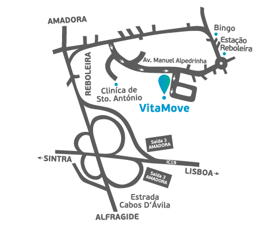

Como Chegar?
Transporte Pessoal

A 15 minutos do centro de Lisboa, perto
da Clínica de Sto. António e com
parqueamento gratuito. Os acessos
principais são o IC19 (Saída 3 – Amadora)
e a Estrada dos Cabos D’Ávila em direcção
à Amadora.
Transporte Público
Comboio (600m - ~11min)
Estação da Reboleira (Linha de Sintra)
Estamos a pouco mais de 11 minutos, num percurso pedonal, desde a Estação da Reboleira.
Autocarros
Carreira 185: Amadora (Hospital) ↔ Av. Manuel Alpedrinha (Escola) ↔ Reboleira (Estação de Comboios) ↔ Lisboa (Marquês de Pombal)
~Carreira 186: Amadora (Estação de Comboios) ↔ Av. Manuel Alpedrinha (Escola) ↔ Amadora-Este (Estação de Metro)
Poderá usar a rede de autocarros para chegar até nós. As carreiras 185 e 186 param na nossa praceta, fazendo assim a ligação com o metro e o comboio.